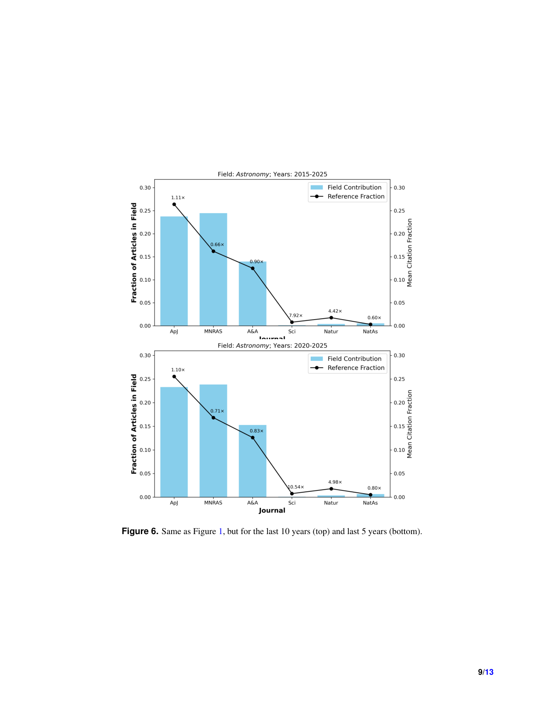

저자: Vardan Adibekyan, Olivier Demangeon, Tiago Campante, Nuno Santos, Susana Barros, Artur Hakobyan | 날짜: 2026-03-26 | Journal: arXiv preprint | DOI: N/A | arXiv: 2603.25349

Figure 1
천문학에서 저널 인용 편향은 얼마나 심각하며, 어떤 패턴으로 나타나는가? 2000-2025년 사이 출판된 약 255,000편의 천문학 논문을 분석한 결과, 다학제 저널(Nature, Science 등)은 논문 점유율 대비 최대 9배 더 많은 인용을 받는다. 저자가 특정 저널에 논문을 게재하면 그 저널에 대한 인용도 유의미하게 증가하는 '자기 기여 편향(self-contribution bias)'은 다학제 저널에서 특히 두드러진다. 이 효과는 지난 10년간 감소 추세이나 여전히 유의미하다. 이는 주제 클러스터링, 기관/개인 출판 습관, 편집 기대에 부응하기 위한 전략적 참조 행동의 복합적 결과로 해석된다.
Figure 1
Figure 1: 천문학 저널별 논문 점유율 대비 인용 비율 분포 — 다학제 vs. 분야 특화 저널 비교
| 항목 | 점수 |
|---|---|
| Novelty | 3/5 |
| Technical Soundness | 4/5 |
| Significance | 4/5 |
| Clarity | 4/5 |
| Overall | 4/5 |
총평: 천문학 분야 25년치 255,000편 논문으로 저널 인용 편향의 규모(최대 9배)와 자기 기여 편향을 정량화했으며, citation-based 지표를 더 비판적으로 해석해야 한다는 실증적 근거를 제공한다.